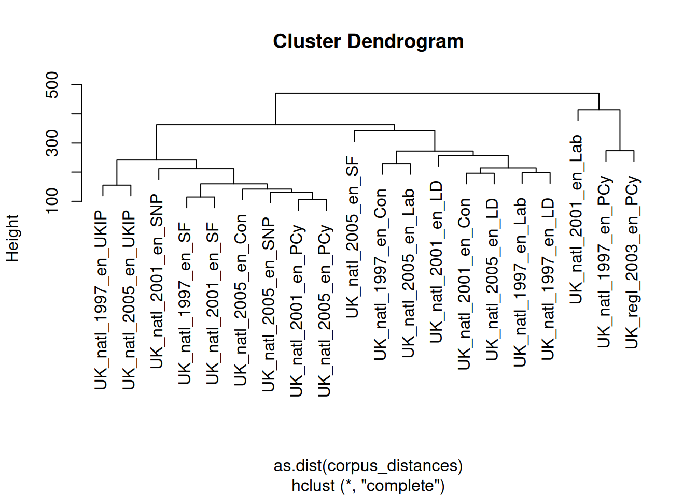
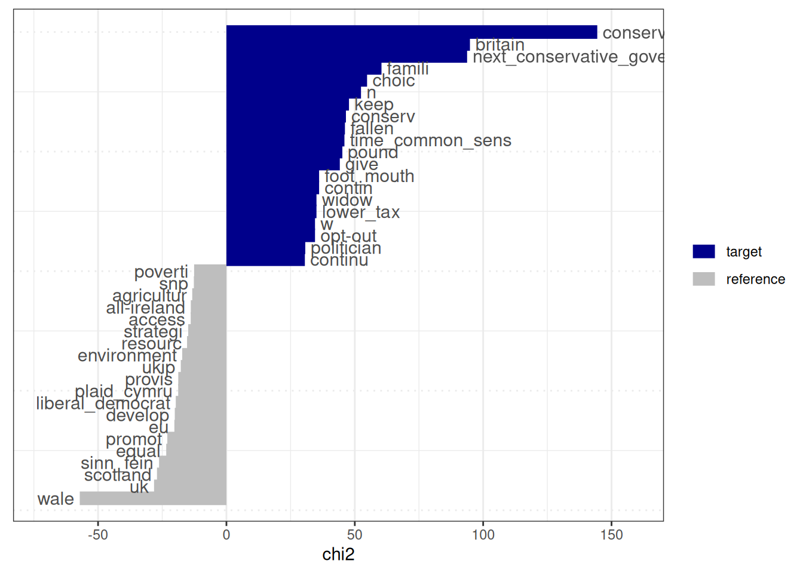

4.4 Text Statistics
Apart from graphics, we can also calculate a wide range of statistics about our texts, and the quanteda.textstats package offers a range of functions for this. We will use the pre-processed DFM (data_dfm_trimmed) and tokens (data_tokens_stemmed) for these calculations. We will go through the various options in turn.
4.4.1 Summary
textstat_summary() provides basic summary statistics for each document in the corpus, such as the number of characters, tokens, types, sentences, and paragraphs. Note that this command works on the original corpus, and not on the cleaned DFM:
## document chars sents tokens types puncts numbers symbols urls
## 1 UK_natl_1997_en_Con 131975 1188 23398 3174 2256 346 0 0
## 2 UK_natl_1997_en_Lab 111444 822 19372 3007 1787 114 15 0
## 3 UK_natl_1997_en_LD 90883 852 15988 2472 1766 104 38 0
## 4 UK_natl_1997_en_PCy 103411 765 17892 2969 1743 72 2 0
## 5 UK_natl_1997_en_SF 37998 254 6540 1629 620 55 8 0
## 6 UK_natl_1997_en_UKIP 72973 488 13103 2631 1195 61 8 0
## tags emojis
## 1 0 0
## 2 0 0
## 3 0 0
## 4 0 0
## 5 0 0
## 6 0 04.4.2 Frequencies
textstat_frequency() provides detailed frequency counts for features in a DFM, including term frequency (total occurrences, like we already saw earlier) and document frequency (number of documents the term appears in). It can also group frequencies by document variables, allowing for comparison of term usage across different categories of documents.
## feature frequency rank docfreq group
## 1 govern 657 1 20 all
## 2 work 645 2 20 all
## 3 need 613 3 20 all
## 4 support 596 4 20 all
## 5 develop 589 5 19 all
## 6 increas 475 6 20 all
## 7 britain 465 7 16 all
## 8 provid 462 8 20 all
## 9 ensur 461 9 20 all
## 10 school 449 10 18 allparty_frequencies <- textstat_frequency(data_dfm_trimmed, groups = data_dfm_trimmed@docvars$Party) # Group by Party
head(party_frequencies, 10)## feature frequency rank docfreq group
## 1 britain 141 1 3 Con
## 2 govern 124 2 3 Con
## 3 school 97 3 3 Con
## 4 give 87 4 3 Con
## 5 work 82 5 3 Con
## 6 peopl 79 6 3 Con
## 7 can 74 7 3 Con
## 8 continu 73 8 3 Con
## 9 labour 73 8 3 Con
## 10 pension 72 10 3 Con4.4.3 Lexical diversity
Lexical diversity measures the variety of vocabulary in a text. textstat_lexdiv() calculates various measures like the Type-Token Ratio (TTR), which is the number of types (unique tokens) divided by the total number of tokens. A higher TTR generally indicates greater lexical diversity. This function operates on a tokens object:
## document TTR
## 1 UK_natl_1997_en_Con 0.2733320
## 2 UK_natl_1997_en_Lab 0.3136331
## 3 UK_natl_1997_en_LD 0.3274956
## 4 UK_natl_1997_en_PCy 0.3124604
## 5 UK_natl_1997_en_SF 0.4374573
## 6 UK_natl_1997_en_UKIP 0.3505444
## 7 UK_natl_2001_en_Con 0.3433852
## 8 UK_natl_2001_en_Lab 0.2420945
## 9 UK_natl_2001_en_LD 0.2798416
## 10 UK_natl_2001_en_PCy 0.4446326
## 11 UK_natl_2001_en_SF 0.4259938
## 12 UK_natl_2001_en_SNP 0.3553472
## 13 UK_natl_2005_en_Con 0.4268849
## 14 UK_natl_2005_en_Lab 0.2891995
## 15 UK_natl_2005_en_LD 0.3209892
## 16 UK_natl_2005_en_PCy 0.4569697
## 17 UK_natl_2005_en_SF 0.2959165
## 18 UK_natl_2005_en_SNP 0.5817634
## 19 UK_natl_2005_en_UKIP 0.3882198
## 20 UK_regl_2003_en_PCy 0.25512934.4.4 Readability
Readability statistics estimate the difficulty of understanding a text based on characteristics like sentence length and the number of syllables per word. textstat_readability() calculates various standard scores (e.g., Flesch-Kincaid, Gunning Fog). This function works directly on a corpus object or a character vector:
corpus_readability <- textstat_readability(data_corpus_ukmanifestos, measure = "Flesch.Kincaid")
head(corpus_readability)## document Flesch.Kincaid
## 1 UK_natl_1997_en_Con 10.79018
## 2 UK_natl_1997_en_Lab 12.70561
## 3 UK_natl_1997_en_LD 11.10189
## 4 UK_natl_1997_en_PCy 13.48201
## 5 UK_natl_1997_en_SF 14.27023
## 6 UK_natl_1997_en_UKIP 13.822504.4.5 Similarity and Distance
These functions calculate the similarity or distance between documents or features based on their representation in a DFM. They help quantify how alike or different texts or words are based on their shared vocabulary and term frequencies. Common measures include cosine similarity and Euclidean distance:
# method = 'cosine': Specifies the cosine similarity measure. margin =
# 'documents': Calculate the similarity between documents (rows of the DFM).
corpus_similarties <- textstat_simil(data_dfm_trimmed, method = "cosine", margin = "documents")
corpus_similarties_matrix <- as.matrix(corpus_similarties)
corpus_similarties_matrix[1:5, 1:5]## UK_natl_1997_en_Con UK_natl_1997_en_Lab UK_natl_1997_en_LD
## UK_natl_1997_en_Con 1.0000000 0.7569519 0.7502951
## UK_natl_1997_en_Lab 0.7569519 1.0000000 0.7528290
## UK_natl_1997_en_LD 0.7502951 0.7528290 1.0000000
## UK_natl_1997_en_PCy 0.6093673 0.6155356 0.6148482
## UK_natl_1997_en_SF 0.4817308 0.4968049 0.4681049
## UK_natl_1997_en_PCy UK_natl_1997_en_SF
## UK_natl_1997_en_Con 0.6093673 0.4817308
## UK_natl_1997_en_Lab 0.6155356 0.4968049
## UK_natl_1997_en_LD 0.6148482 0.4681049
## UK_natl_1997_en_PCy 1.0000000 0.4771206
## UK_natl_1997_en_SF 0.4771206 1.0000000# method = 'euclidean': Specifies the Euclidean distance measure margin =
# 'documents': Calculate the distance between documents
corpus_distances <- textstat_dist(data_dfm_trimmed, margin = "documents", method = "euclidean")
# Convert the distance object to a matrix for inspection of pairwise distances
corpus_distances_matrix <- as.matrix(corpus_distances)
corpus_distances_matrix[1:5, 1:5]## UK_natl_1997_en_Con UK_natl_1997_en_Lab UK_natl_1997_en_LD
## UK_natl_1997_en_Con 0.0000 230.1652 230.7423
## UK_natl_1997_en_Lab 230.1652 0.0000 197.8080
## UK_natl_1997_en_LD 230.7423 197.8080 0.0000
## UK_natl_1997_en_PCy 290.9605 262.1793 249.6117
## UK_natl_1997_en_SF 309.0372 257.2198 229.1244
## UK_natl_1997_en_PCy UK_natl_1997_en_SF
## UK_natl_1997_en_Con 290.9605 309.0372
## UK_natl_1997_en_Lab 262.1793 257.2198
## UK_natl_1997_en_LD 249.6117 229.1244
## UK_natl_1997_en_PCy 0.0000 266.7133
## UK_natl_1997_en_SF 266.7133 0.0000If we would want to, we can also visualise the distances between the documents in the form of a dendrogram, by clustering the distances object:
 The results here are quite interesting, for one in that while both the 1997 and 2003 Plaid Cymru documents are very similar, they are clustered together with the 2001 Labour Party document, which is quite far from its 1997 and 2005 counterparts.
4.4.6 Keyness
Keyness statistics identify terms that are unusually frequent or infrequent in a target group of documents compared to a reference group. This is useful for identifying characteristic terms within a corpus subset and understanding what distinguishes one set of texts from another. A common measure is the log-likelihood ratio or chi-squared statistic:
# Create a logical vector TRUE for documents from the Conservative party and
# FALSE for others. This vector defines the 'target' group.
data_dfm_trimmed@docvars$is_conservative <- data_dfm_trimmed@docvars$Party == "Con"
# Compute keyness statistics comparing the Conservative manifestos (target) to
# all other manifestos (reference) target =
# data_dfm_trimmed@docvars$is_conservative: Specifies the target group using
# the logical vector
keyness_conservative <- textstat_keyness(data_dfm_trimmed, target = data_dfm_trimmed@docvars$is_conservative)
# View the most distinctive terms for the Conservative party (highest keyness
# scores) and the least distinctive terms (lowest keyness scores, which are
# characteristic of the reference group)
head(keyness_conservative, 20)## feature chi2 p n_target n_reference
## 1 conservative_govern 144.44686 0.000000e+00 38 14
## 2 britain 94.85417 0.000000e+00 141 324
## 3 next_conservative_govern 93.74717 0.000000e+00 17 0
## 4 famili 60.39675 7.771561e-15 69 137
## 5 choic 54.78260 1.346701e-13 59 113
## 6 n 52.41623 4.489742e-13 13 3
## 7 keep 47.73544 4.877987e-12 47 85
## 8 conserv 46.54836 8.938517e-12 61 131
## 9 fallen 46.16172 1.088840e-11 19 14
## 10 time_common_sens 45.96519 1.203726e-11 10 1
## 11 pound 45.15771 1.817879e-11 23 24
## 12 give 44.16372 3.020273e-11 87 228
## 13 contin 36.10094 1.873561e-09 10 3
## 14 foot_mouth 36.10094 1.873561e-09 10 3
## 15 lower_tax 35.07639 3.170212e-09 9 2
## 16 widow 35.07639 3.170212e-09 9 2
## 17 opt-out 34.50407 4.253600e-09 8 1
## 18 w 34.50407 4.253600e-09 8 1
## 19 politician 30.71197 2.993130e-08 19 24
## 20 continu 30.55484 3.245615e-08 73 207## feature chi2 p n_target n_reference
## 6238 poverti -12.58534 3.887848e-04 3 109
## 6239 snp -12.69011 3.675955e-04 0 75
## 6240 agricultur -13.31662 2.630645e-04 1 91
## 6241 all-ireland -13.87526 1.953533e-04 0 82
## 6242 access -13.90699 1.920823e-04 10 186
## 6243 strategi -14.88492 1.142728e-04 7 164
## 6244 resourc -15.33557 9.000581e-05 12 214
## 6245 environment -17.22185 3.325894e-05 4 148
## 6246 ukip -17.77023 2.492533e-05 0 105
## 6247 provis -18.75683 1.484903e-05 5 168
## 6248 plaid_cymru -18.78653 1.461959e-05 0 111
## 6249 liberal_democrat -19.72714 8.932357e-06 1 129
## 6250 develop -20.11047 7.309549e-06 47 542
## 6251 eu -20.27349 6.712432e-06 12 247
## 6252 promot -23.02328 1.600513e-06 18 321
## 6253 equal -23.45134 1.281138e-06 2 163
## 6254 sinn_féin -26.24228 3.011560e-07 0 155
## 6255 scotland -27.04384 1.988927e-07 3 196
## 6256 uk -28.18851 1.100557e-07 10 278
## 6257 wale -57.12540 4.085621e-14 2 362The output of textstat_keyness includes the feature, the keyness score, and the \(p\)-value. Positive keyness scores indicate terms that are unusually frequent in the target group. In contrast, negative scores indicate terms unusually infrequent in the target group (and thus characteristic of the reference group). Here, these are words refering to “britain”, the family (“famili”), and choice (“choic”). We can of course also visualise this:

4.4.7 Entropy
Entropy measures the randomness or evenness of feature distributions. Here, we can use it to assess the diversity of terms within documents (document entropy) or the evenness of a term’s distribution across the corpus (feature entropy). High document entropy means a document uses a wide variety of terms relatively evenly, while low entropy means a few terms dominate. High feature entropy means a term is spread relatively evenly across documents, while low entropy means it’s concentrated in a few documents.
# margin = 'documents': Calculate entropy for each document (rows of the DFM)
corpus_entropy_docs <- textstat_entropy(data_dfm_trimmed, margin = "documents")
corpus_entropy_docs <- as.data.frame(corpus_entropy_docs)
head(corpus_entropy_docs)## document entropy
## 1 UK_natl_1997_en_Con 10.332738
## 2 UK_natl_1997_en_Lab 10.383004
## 3 UK_natl_1997_en_LD 10.186036
## 4 UK_natl_1997_en_PCy 10.233130
## 5 UK_natl_1997_en_SF 9.619364
## 6 UK_natl_1997_en_UKIP 10.068977# margin = 'features': Calculate entropy for each feature (columns of the DFM)
corpus_entropy_feats <- textstat_entropy(data_dfm_trimmed, margin = "features")
corpus_entropy_feats <- as.data.frame(corpus_entropy_feats)
corpus_entropy_feats <- corpus_entropy_feats[order(-corpus_entropy_feats$entropy),
]
head(corpus_entropy_feats, 10)## feature entropy
## 4 elect 4.140895
## 16 economi 4.129012
## 86 mean 4.122883
## 380 parti 4.114558
## 1254 forc 4.110995
## 479 polici 4.110578
## 130 increas 4.107211
## 582 mani 4.101916
## 782 greater 4.101321
## 688 societi 4.097388